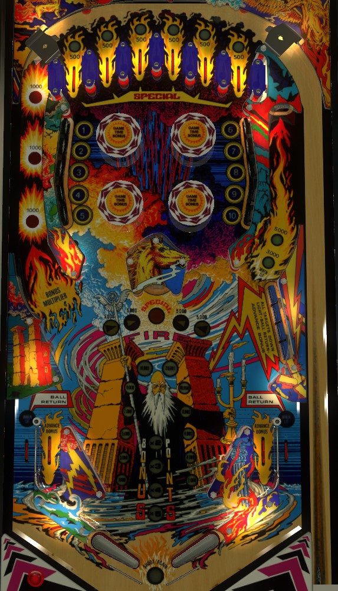

Bonus is important on Earth Wind Fire. From the right flipper, always shoot the left orbit, which advances the bonus multiplier and leads to the top lanes that build base bonus. From the left flipper, shoot the 4-bank of drop targets on the right to advance the bonus and light one of the out lanes for a ball save. Once bonus is maxed and multiplied, go for the 1-10 standup targets surrounding the bumpers to increase the saucer value, or shoot the saucer itself. Note that on this game, every player plays a Game Time Bonus timed bonus ball immediately after their final regular turn.
Each of the 6 top lanes always scores 500 points and a bonus advance. Roll through a lit top lane to unlight it. There is no flipper lane change; you need to go through all 6 lanes separately, which requires plunge and nudge skill, up and down action from the pop bumpers, or many left orbit shots of varying speeds. Unlighting all 6 top lanes scores the Top Lanes Special, which can be worth an extra ball or 50,000 points, and resets the top lanes. Top lanes also reset when the ball drains, so you need to complete the set all within a single ball.
Two pop bumpers are lit; the lit bumpers are always diagonal from each other. Hitting any bumper alternates which bumpers are lit or unlit. Lit bumpers score 1,000 points, and unlit bumpers score 100.
The 1-10 standup targets always score 500 points. Hit a lit target to unlight it. Unlight all 10 targets to advance the value of the center saucer. The center saucer scores 5,000 points when not lit; each completion of 1-10 increases the value to 15,000, then 25,000, then 35,000 plus a Fire Special. The Fire Special can award a free game, an extra ball, 50,000 points, or "superbonus", which lights the word Superbonus on the backglass and does nothing else (used in some places to signify an earned free drink, or similar). Collecting the Fire Special causes the saucer to completely unlight; otherwise, the saucer value is maintained after it is scored. Progress on the 1-10 targets is carried from ball to ball; completing the 1-10 targets more than once or twice in a game is unreasonable given that most of the targets cannot be shot directly and require pop bumper luck to hit.
Each rollover button in the left orbit scores 1,000 points. Hitting all 3 buttons in order from bottom to top with a single shot increments the bonus multiplier, which can be advanced to 5x.
Starts each ball at a value of 1,000 points plus a bonus advance. Hitting the target at the end of the lane increases its value to 3,000, then 5,000 points.
Each target down in the right bank scores 1,000 points and a bonus advance. Completing the bank lights one of the out lanes for Ball Return. A ball going down an out lane lit for Ball Return is returned to the shooter lane for continued play. If only one out lane is lit, they will alternate being lit each time a slingshot is scored. If the 4-bank is completed a second time, both out lanes can be lit at once. Using a Ball Return unlights it; if both out lanes are lit for Ball Return, using either of them causes both to unlight.
Earth Wind Fire has a conventional in/out lane setup. In lanes score 500 points and a bonus advance. Out lanes score 10,000 points and can be lit for Ball Return as described above.
Bonus is advanced by top lanes, in lanes, the right lane standup target, and the right drop targets. Bonus multiplier is advanced each time a full shot up the left orbit is made. Max bonus is 5x 29,000 = 145,000 points. No part of the bonus can be carried over from ball to ball. There is no mid-ball bonus collect.
On the final ball of the game (e.g. ball 3 of a 3-ball game), the display reading "Balls to Play: 01" will change to "Game Time Bonus: 10" as soon as the ball enters the playfield. During this final ball, every 3rd switch hit anywhere on the playfield adds 1 to the Game Time Bonus. Immediately after this final normal ball drains, the Game Time Bonus begins. Game Time Bonus is a timed bonus ball with unlimited ball save for as long as there is time on the clock.
If you drain during Game Time Bonus: a new ball will be fed to the shooter lane and play continues with no penalty other than the clock continuing to run.
If you tilt during Game Time Bonus: the entire playfield will go dark and the ball will be allowed to drain, with no further points being scored. The entire end of ball bonus including multiplier will be reset without being scored. If there is still time on the clock when the ball reaches the out hole, play will continue.
When Game Time Bonus ends: all playfield lights will flash when there are less than 10 seconds left on the clock. When the clock hits 0, all playfield lights go dark and the ball is allowed to drain, with no further points being scored. After the ball reaches the out hole, your end of ball bonus is scored, and the game either enters Game Over mode or transitions to the next player, who will play their final normal ball immediately followed by their Game Time Bonus ball.
If you collect an extra ball during Game Time Bonus: the clock immediately stops, and the previous rule of "every 3rd switch adds 1 to the clock" applies. When the ball drains and the extra ball is used, the Game Time Bonus ball will continue.
Remember that all players play their Game Time Bonus ball immediately after their final standard turn, and that the Game Time Bonus clock continues to run while the ball is in the shooter lane waiting to be plunged.